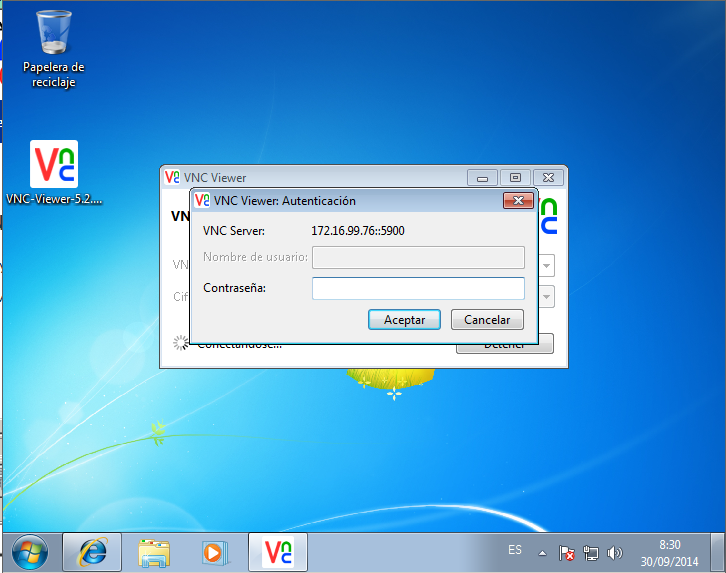
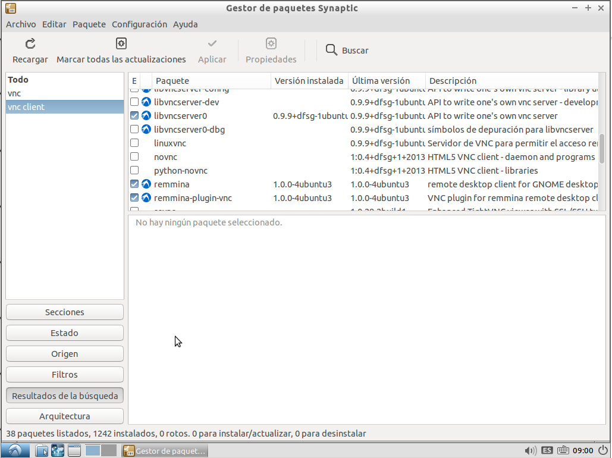
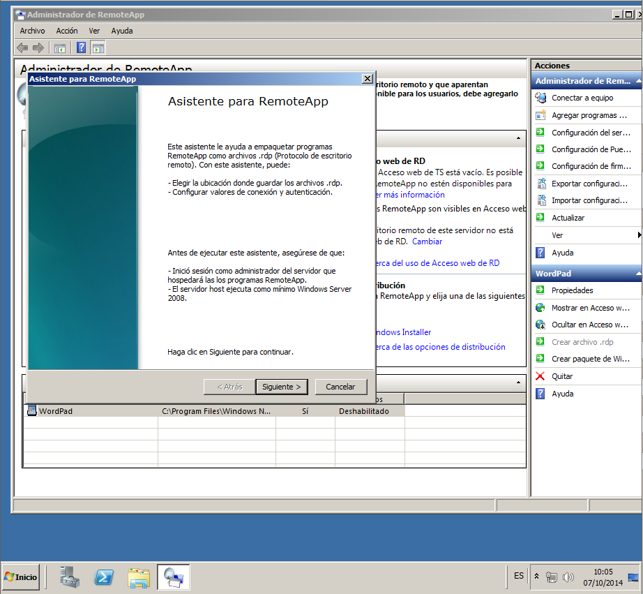

- Módulo: Sistemas Operativos
- Título del trabajo Acceso Remoto
- Componentes del grupo: Eliot Farrais García
- Curso Académico: 2014/2015
- Fecha de entrega: 23 de septiembre de 2014
Nos descargamos RealVNC de: https://www.realvnc.com/download/get/1590/
Instalamos el servidor de VNC. En la instalación elejimos todos los componentes
Obtenemos la licencia Free desde la página del servidor
Aceptamos la conexiones no cifradas en la instalación
Ponemos la contraseña predeterminada, en nuestro caso será "root"
Una vez realizada la instalación, se nos iniciará el servidor VNC. Se debe de inciar correctamente con todos lo Servicios en Activo
Nos vamos al cliente, e instalamos VNC viewer, el cliente del VNC para ver el escritorio remoto

Una vez instalado, pondremos la ip o el nombre dns de nuestro servidor VNC.
Aceptaremos las conexiones no cifradas entre cliente y servidor
Pondremos nuesra contraseña predeterminada
Nos hemos conectado correctamente a nuestro servidor VNC en el servidor
Nos descargamos de la página oficial el Servidor para Linux de debian y lo instalamos
Nos registramos y ponemos la licencia. Con lo que así registramos el programa
Elejimos la conexiones no cifradas
Como contraseña ponemos root
Nos conectamos al Servidor Lubuntu
Nos descargamos el cliente Remmina para Lubuntu en Synaptics
Lo abrimos y realizamos una conexión VNC, eligiendola en la parte protocolos.
Se nos realiza la Conexión

Lubuntu Cliente
Lubuntu Server
En el caso de Windows no es necesario instalar escritorio RDP, dado qe viene integrado con Windows
Para configurarlo, en el servidor, Nos vamos a Menu Inicio -> Equipo -> Propiedades -> Configuración de acceso remoto -> Ejecutar cualquier versión
Iniciamos escritorio remoto en el Cliente, y ponemos la dirreción Ip del Servidor
Seleccionamos el nombre de usuario y la contraseña
Se nos inicia sesión sin problemas en el Cliente Windows
Se nos inicia sesión sin problemas en el Cliente Lubuntu con Remmina
Instalamos el servidor xrdp desde Synaptics.
Configuramos el archivo: sudo nano /etc/xrdp/startwm.sh y editamos
#. /etc/X11/Xsession
. /usr/bin/startlxde
Quedando de la siguiente manera
En el cliente, conectamos con la IP en el Servidor

Cuando nos salga la siguiente ventana, elejiremos en modules vnc-any y pondremos la contraseña de superusuario
Se nos conecta sin problemas al escritorio de Lubuntu con protocolo rdp
Abrimos el Administrador de servidores y vamos a Agregar Roles. DAmos clic en Agregar Servicios de escritorio remoto y damos clic en siguiente
Dentro de los servicios de rol, activamos la casilla Host de sesión de Escritorio remoto y pulsamos siguiente
Al elegir el Método de autentificación, elejimos "No requerir autenticficación de red"
En el modo de licencia, elejiremos por dispositivo
En el Grupo de usuarios, agregamos a Administrador para poder iniciar sesión con el
Activaremos las Experiencias del cliente, activando todas sus opciones. Una vez terminado esto, le damos a instalar y reiniciamos el sistema.
Pondremos los usuario dentro del grupo de escritorio remoto
Iniciaremos sesión con el usuario que hemos añadido al grupo
Añadimos las herramientas del host de escritorio remoto.

Abrimos remoteapp
Nos dirijimos a Configuración de Puerta de enlace de Escritorio remoto, y configuramos las conexiones de acceso remoto.
una vez finalizado cerramos
Añadimos una nueva alpicacion a remoteapp. Para ello nos dirijimos a Agregar Programas a remoteapp
Agregamos en Wordpad el nuevo programa
Terminamos agregando y dando a aceptar
Iniciamos el programa desde el escritorio remoto, sin problemas
